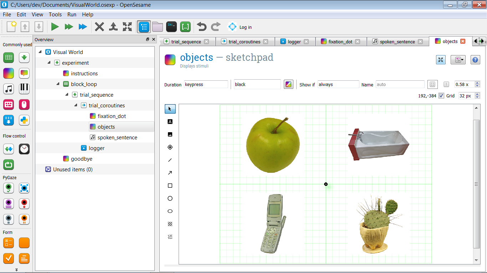
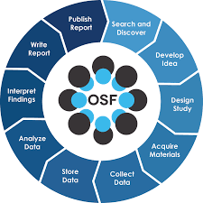
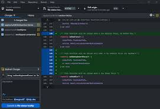
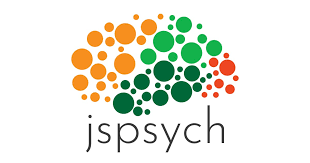

Research training in the MIND Lab
Each semester, the lab leads and doctoral students deliver a series of seminars on various topics related to research training. The seminars are designed to provide students with the necessary skills and knowledge to conduct research in the field of cognitive psychology and neuroscience.
MIND Lab Research Training Badges
This semester we are introducing a new initiative to encourage and recognise the development of research skills among our lab members.
We have identified a set of skills that are important for conducting research in cognitive psychology and neuroscience. We will be awarding digital badges to students who complete training in these skills, through participation in workshops, seminars, or contributions to lab projects.
Badges will be visible on the profile of each lab member on the MIND Lab website, showcasing their skills and expertise to potential employers and collaborators. Each badge has a specific set of criteria that must be met in order to earn it, and lab mambers will receive feedback on their progress towards earning each badge.
Soon, the badges will be implemented using the open badge standard, which allows for easy sharing and verification of skills across different platforms. This means that lab members will be able to showcase their badges on their CVs, LinkedIn profiles, and other professional networks.
Some of our training sessions
These are some of the core skills for conducting research in the MIND lab. While other sessions might be more specific to a particular project, these sessions are designed to provide a solid foundation for all students in the lab.
Introduction to functional near-infrared spectroscopy (fNIRS) for brain imaging

This workshop will provide an introduction to Functional Near-Infrared Spectroscopy (fNIRS), a non-invasive neuroimaging technique that measures brain activity by detecting changes in blood oxygenation. fNIRS is based on the principle that when a brain region is activated, blood flow to that region increases, leading to an increase in oxygenated hemoglobin and a decrease in deoxygenated hemoglobin. fNIRS uses near-infrared light to measure these changes in blood oxygenation, allowing researchers to study brain function in real-time.
Introduction to eye-tracking for cognitive psychology
Eye-tracking is a powerful tool for studying visual attention and cognitive processes in cognitive psychology. It allows researchers to measure where and how long participants look at different stimuli, providing insights into their cognitive processes. Eye-tracking can be used to study a wide range of topics, including visual perception, attention, memory, and decision-making.
In this session, we will cover the basics of eye-tracking, including how eye-trackers work, how to set up an eye-tracking experiment, and how to analyze eye-tracking data. We will also discuss some common applications of eye-tracking in cognitive psychology research.
Designing and coding experiments with OpenSesame

OpenSesame is a free and open-source software package for designing and running psychological experiments. It is designed to be user-friendly and flexible, allowing researchers to create a wide range of experimental paradigms without needing extensive programming knowledge. OpenSesame supports various types of stimuli, including images, sounds, and videos, and can be used to collect data from participants in both laboratory and online settings. It can also interface with various hardware devices, such as eye trackers and response boxes, making it a versatile tool for researchers in cognitive psychology and neuroscience.
In this workshop, we will cover the basics of designing and coding experiments with OpenSesame, including how to create a simple experiment, how to use different types of stimuli, and how to collect and analyse data.
Introduction to data analysis with R
R is a free and open-source programming language and software environment for statistical computing and graphics. It is widely used in the fields of data analysis, statistics, and machine learning, making it a valuable tool for researchers in cognitive psychology and neuroscience.
In the MIND lab, R is our default tool for analysis and visualisation of data. In this workshop, we will cover the basics of R, including how to install and set up R and RStudio, how to import and manipulate data. We will also cover some common statistical techniques used in cognitive psychology and neuroscience research, such as t-tests, ANOVA, and regression analysis.
Introduction to Zotero for reference management
Zotero is a free and open-source reference management software that helps researchers collect, organize, and cite their references. It is designed to be user-friendly and flexible, allowing researchers to create a personal library of references and easily generate citations in various styles. Zotero can automatically extract metadata from web pages, PDFs, and other sources, making it easy to add references to your library.
In this workshop, we will cover the basics of using Zotero for reference management, including how to install and set up Zotero, how to add references to your library, and how to generate citations in different styles. We will also discuss some best practices for using Zotero to promote transparency and reproducibility in research.
Using OpenScience Framework (OSF) for research management

The Open Science Framework (OSF) is a free and open-source web-based platform for managing and sharing research projects. It is designed to help researchers organize their work, collaborate with others, and share their findings with the broader scientific community. OSF provides a range of tools for managing research projects, including file storage, version control, and project management features.
We will cover the basics of using OSF for research management, pre-registration, and sharing research findings. We will also discuss best practices for using OSF to promote transparency and reproducibility in research.
Using GitHub for version control and collaboration

GitHub is a web-based platform for version control and collaboration that is widely used in the fields of software development and data science. It allows researchers to track changes to their code and data, collaborate with others, and share their work with the broader scientific community.
When coding cognitive psychology and neuroscience experiments, it is important to keep track of changes to the code and data, especially when working in a team. GitHub provides a range of tools for version control, including branching, merging, and pull requests, making it easy to collaborate with others and keep track of changes to the code. In this session, we will cover the basics of using GitHub for version control and collaboration, including how to create a repository, how to commit changes, and how to collaborate with others using pull requests. We will also discuss best practices for using GitHub to promote transparency and reproducibility in research.
Introduction to JSPsych for coding online experimental tasks

JSPsych is a JavaScript library for creating and running online psychological experiments. It is designed to be flexible and easy to use, allowing researchers to create a wide range of experimental paradigms that can be run in web browsers.
Like OpenSesame, JSPsych supports various types of stimuli, including images, sounds, and videos, and can be used to collect data from participants in both laboratory and online settings.
JSPsych is particularly useful for researchers who want to run experiments online, due to its ability to collect data from participants in real-time and its compatibility with various web-based platforms. However, it requires programming knowledge, as it is based on JavaScript and HTML.
In this workshop, we will cover the basics of using JSPsych for coding online experimental tasks, including how to create a simple experiment, how to use different types of stimuli, and how to collect and analyze data. We will also discuss some common applications of JSPsych in cognitive psychology and neuroscience research.
Mixed effects modelling with R
Mixed effects modelling is a powerful statistical technique used to analyze data with complex hierarchical structures, such as repeated measures or nested data. It allows researchers to account for both fixed and random effects in their models, making it a valuable tool for analyzing data in cognitive psychology and neuroscience research.
In this workshop, we will cover the basics of mixed effects modelling with R, including how to fit mixed effects models using the lme4 package, how to interpret the results, and how to visualize the results using the ggplot2 package. We will also discuss some common applications of mixed effects modelling in cognitive psychology and neuroscience research.